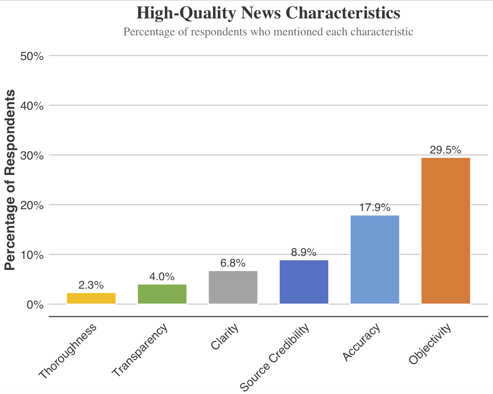
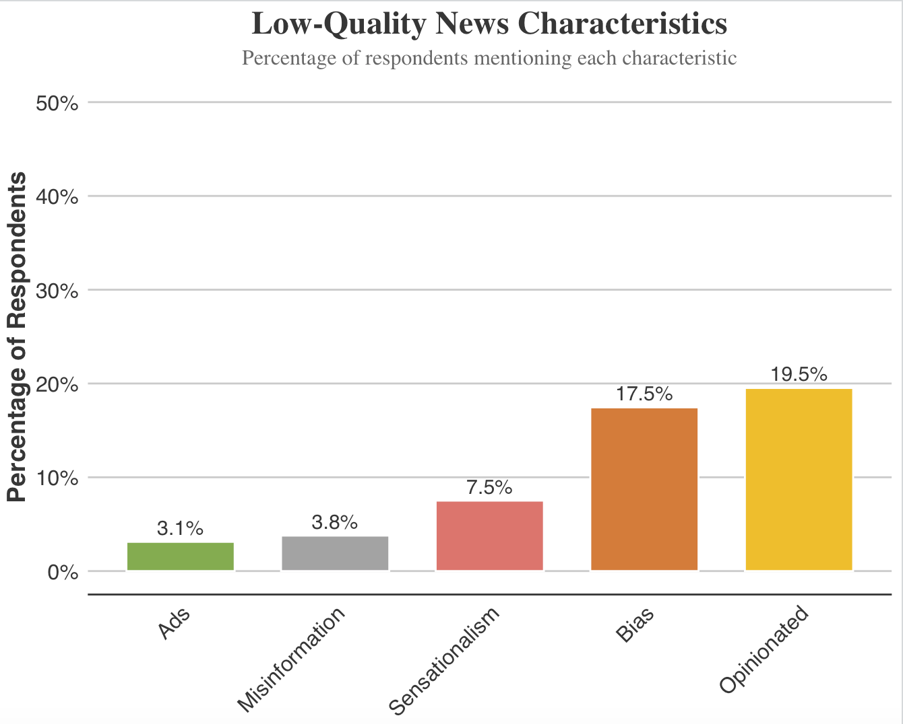
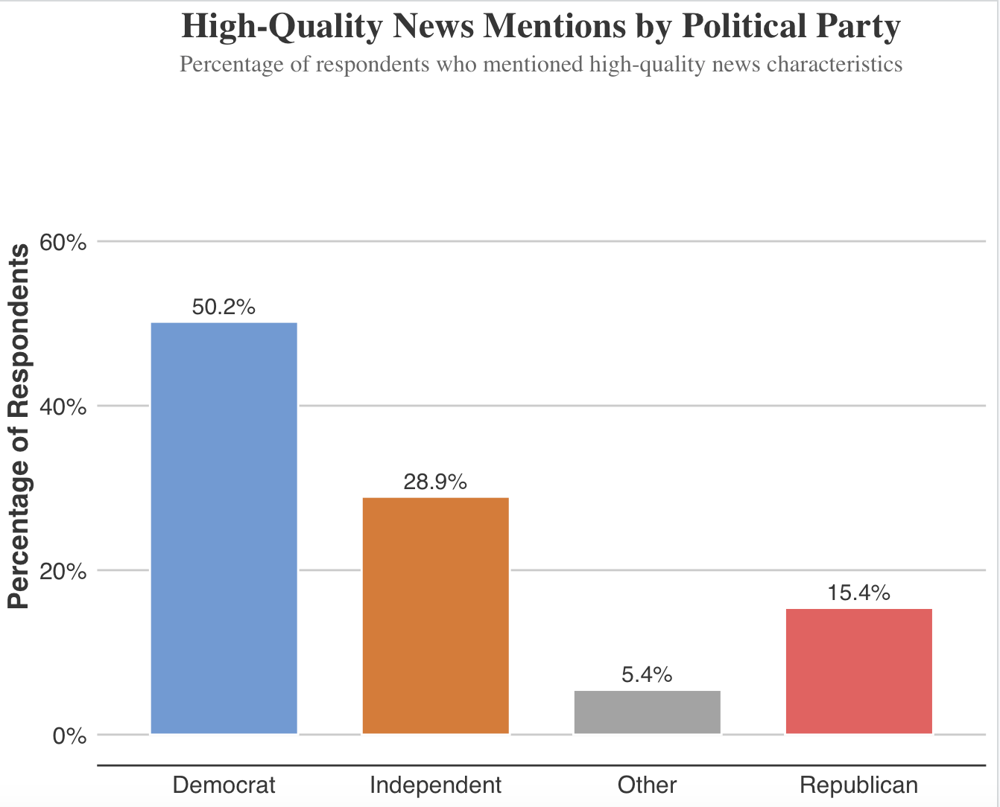
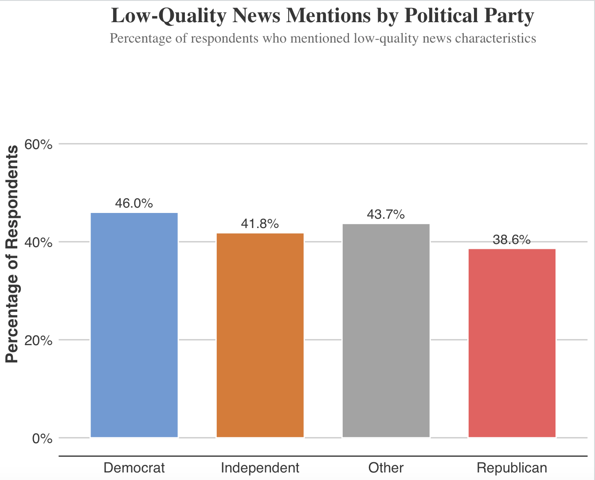

Introduction
This project leverages a dictionary-based approach to quantify how respondents perceive both high-quality and low-quality news characteristics. Using dictionaries of keywords (see below), we systematically analyze mentions of these characteristics in respondents’ descriptions of news, allowing us to explore how different political groups evaluate news quality.
Analysis of News Quality by Characteristics

High-Quality News Characteristics (Figure 1): The dictionary-based analysis shows that objectivity (29.5%) and accuracy (17.9%) are the most frequently mentioned characteristics of high-quality journalism. This aligns with academic literature on media trust, which emphasizes that the public perceives neutrality and fact-based reporting as core components of good journalism (Kovach & Rosenstiel, 2014). Characteristics such as clarity (6.8%), source credibility (8.9%), transparency (4.0%), and thoroughness (2.3%) are mentioned less frequently, but remain important components of journalistic quality. These findings are consistent with studies that indicate the public places greater emphasis on neutrality and fact-checking when assessing news quality, while other attributes like clarity and transparency are often taken for granted (Bennett, 2016). The lower emphasis on transparency and thoroughness may also reflect a broader public assumption that these characteristics should be inherent to objective, accurate reporting.

Low-Quality News Characteristics (Figure 2): When it comes to low-quality news, the most frequently mentioned characteristics are opinionated content (19.5%) and bias (17.5%). This suggests that people associate poor journalism with overly subjective reporting and unbalanced coverage, findings that align with broader concerns about the rise of partisan media (Stroud, 2011). Sensationalism (7.5%) and misinformation (3.8%) also contribute to the public’s negative assessment of journalism but are mentioned less frequently, reflecting the public’s frustration with exaggerated or inaccurate reporting. The presence of ads (3.1%) is seen as less directly linked to journalistic quality, though concerns about the commercialization of news are discussed in media studies as a broader issue affecting the industry (McNair, 2009).
Dictionary Building and R Codes
The following dictionary was used to capture mentions of key high-quality news characteristics: accuracy, objectivity, clarity, thoroughness, transparency, and source credibility.
high_quality_news_dict <- list(
accuracy = c("accurate", "factual", "correct", "true", "reliable", "verifiable", "precise"),
objectivity = c("objective", "impartial", "neutral", "unbiased", "balanced", "fair", "non-partisan"),
clarity = c("clear", "concise", "understandable", "straightforward", "coherent", "simple", "readable"),
thoroughness = c("thorough", "detailed", "comprehensive", "in-depth", "complete", "exhaustive"),
transparency = c("transparent", "open", "accountable", "honest", "disclosure", "candid"),
source_credibility = c("credible", "reliable sources", "verified", "sourced", "referenced", "cited", "attributed")
)Similarly, a dictionary was created for identifying low-quality news characteristics, capturing negative aspects like bias, sensationalism, misinformation, opinionated, ads.
low_quality_news_dict <- list(
sensationalism = c("sensational", "exaggerated", "overhyped", "shock", "clickbait"),
bias = c("biased", "partisan", "one-sided", "unfair", "slanted"),
misinformation = c("misinformation", "false", "inaccurate", "unverified", "rumor"),
opinionated = c("opinion", "subjective", "personal", "unbalanced", "opinionated"),
ads = c("ads", "advertisement", "commercials", "sponsored", "promo")
)Political Differences in News Quality Perceptions

High-Quality News by Political Party (Figure 3): There are striking political differences in how high-quality journalism is perceived. Democrats (50.2%) are significantly more likely than Republicans (15.4%) or Independents (28.9%) to emphasize high-quality news characteristics. This aligns with research showing that Democrats have greater trust in mainstream media, viewing traditional journalistic standards like objectivity and accuracy as being upheld by the outlets they consume (Pew Research Center, 2020). In contrast, Republicans are more likely to view mainstream media as biased, which could explain their lower emphasis on these high-quality characteristics. This sentiment is well-documented in studies showing that Republicans tend to distrust mainstream outlets and often turn to ideologically aligned media (Ladd, 2011). As a result, they may be less likely to mention traditional markers of journalistic quality because they believe these standards are not being met by the media they encounter.

Low-Quality News by Political Party (Figure 4): In contrast to high-quality news perceptions, there is less variation across political parties in how respondents describe low-quality journalism. Democrats (46%), Independents (41.8%), Others (43.7%), and Republicans (38.6%) all mention low-quality news characteristics at similar rates, suggesting that there is bipartisan agreement on what constitutes poor journalism. Bias, opinionated content, and sensationalism are widely recognized as indicators of low-quality news, regardless of political affiliation. This finding is supported by research showing that while media trust is polarized, there is broad agreement across the political spectrum on what constitutes bad journalism (Iyengar & Hahn, 2009). Both Democrats and Republicans express frustration with biased or subjective reporting, highlighting that while their perceptions of high-quality journalism diverge, their understanding of low-quality journalism is more consistent.
Conclusion
This project illustrates the polarized perceptions of high-quality journalism across political parties, with Democrats emphasizing traditional journalistic standards like objectivity and accuracy, while Republicans are more skeptical of these qualities. However, there is bipartisan agreement on the negative traits associated with low-quality news, particularly bias and opinionated content. The use of a dictionary-based approach provides a transparent and systematic way to measure how frequently these characteristics are mentioned by respondents, allowing us to quantify public opinion on news quality across the political spectrum. These findings have significant implications for both news producers and consumers, highlighting the challenges of maintaining journalistic integrity in a polarized media environment.
References
- Bennett, W. L. (2016). News: The Politics of Illusion. University of Chicago Press.
- Kovach, B., & Rosenstiel, T. (2014). The Elements of Journalism: What Newspeople Should Know and the Public Should Expect. Three Rivers Press.
- McNair, B. (2009). News and Journalism in the UK. Routledge.
- Ladd, J. M. (2011). Why Americans Hate the Media and How It Matters. Princeton University Press.
- Pew Research Center. (2020). Americans See Skepticism of News Media as Healthy, But Partisan Divides Erode Overall Trust.
- Stroud, N. J. (2011). Niche News: The Politics of News Choice. Oxford University Press.
- Iyengar, S., & Hahn, K. S. (2009). Red Media, Blue Media: Evidence of Ideological Selectivity in Media Use. Journal of Communication, 59(1), 19-39.